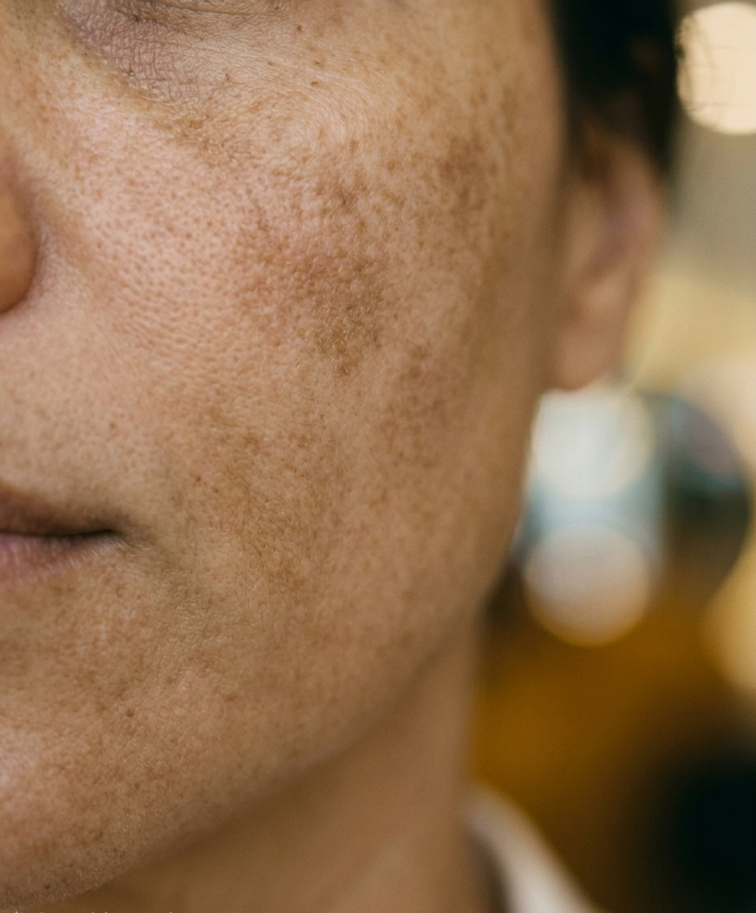
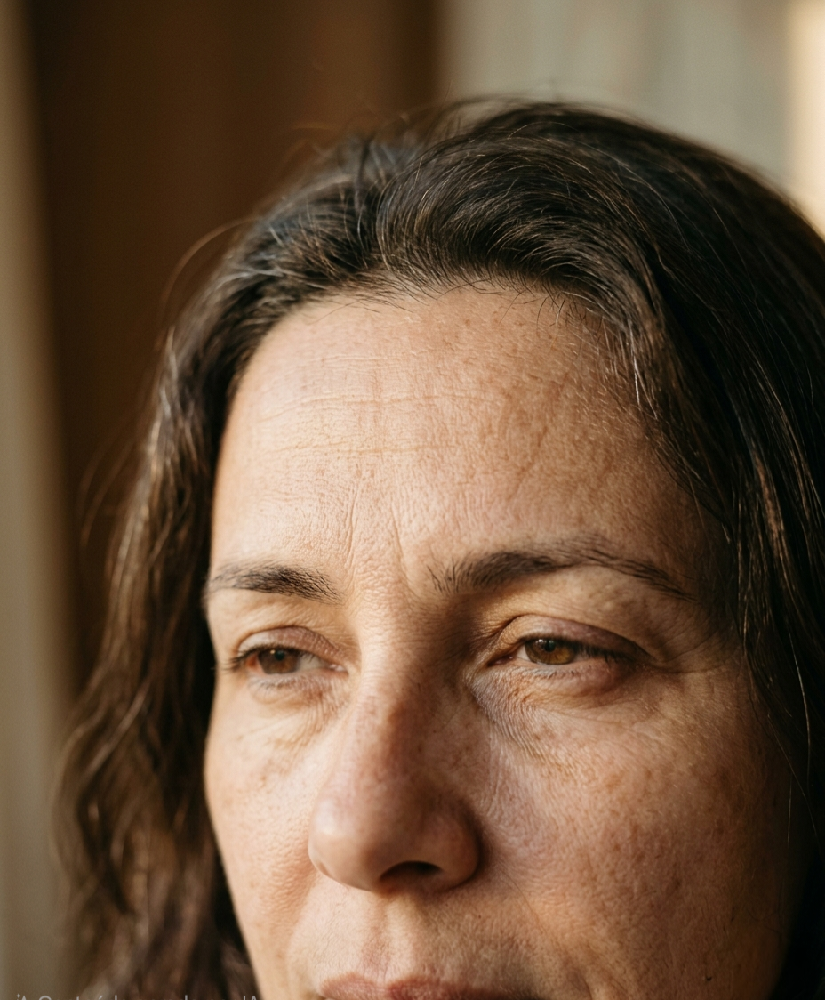

01
Renovação Celular
Microagulhamento
Indução de colágeno e renovação profunda. Resposta visível em poucas sessões, com naturalidade preservada.
Cada pele guarda uma narrativa. Por isso, no atelier, nenhum protocolo nasce de uma fórmula pronta — todos são desenhados a partir do diagnóstico atento da sua história, do seu tempo, da sua arquitetura única.
Da limpeza profunda ao microagulhamento, da revitalização ao tratamento de hipercromias, cada gesto carrega uma intenção. A precisão da cosmetologia avançada encontra o cuidado contemplativo de quem entende que beleza é equilíbrio — vivido em camadas, ao longo do tempo.

Toda jornada começa com escuta. Leitura precisa da pele, da rotina e das expectativas — antes de qualquer gesto.
Ativos de alta performance combinados a uma experiência calma, lenta, contemplativa. Tecnologia que se faz sentir.
Protocolos pensados em camadas — efeito imediato e evolução duradoura, respeitando o tempo natural da pele.
Cada técnica nasce do diagnóstico clínico. Selecione um ponto de partida — o restante eu desenho com você.
Indução de colágeno e renovação profunda. Resposta visível em poucas sessões, com naturalidade preservada.
Higienização cuidadosa que devolve à pele sua respiração natural. Pureza e brilho restaurados.
Hidratação e nutrição combinadas em protocolo personalizado. A pele recupera sua luz interior.
Suavização das marcas do tempo com técnicas combinadas. A naturalidade do rosto é a prioridade.
Tratamento de manchas solares e melasmas com protocolos despigmentantes precisos e progressivos.
Equilíbrio interno e desinchamento. Ritual sensorial que vai muito além da estética.
Protocolo discreto, seguro e progressivo. Confiança restaurada em cada gesto cotidiano.
Toda pele guarda uma história única. Conte a sua — eu cuido do resto, em uma curadoria personalizada que respeita o seu tempo e os seus objetivos.
Cada transformação é fruto de protocolo desenhado em camadas. Arraste o divisor dourado para acompanhar a jornada da pele — do diagnóstico ao resultado.

Antes DepoisPele uniforme, luz reconquistada.
Protocolo despigmentante personalizado com ativos clareadores de última geração. Resultados visíveis a partir da terceira sessão, com tom de pele homogêneo e luminoso.
O tempo permanece. A pele, renovada.
Indução de colágeno combinada a hidratação profunda. Linhas de expressão suavizadas, textura recuperada — naturalidade preservada do início ao fim do protocolo.

Antes Depois